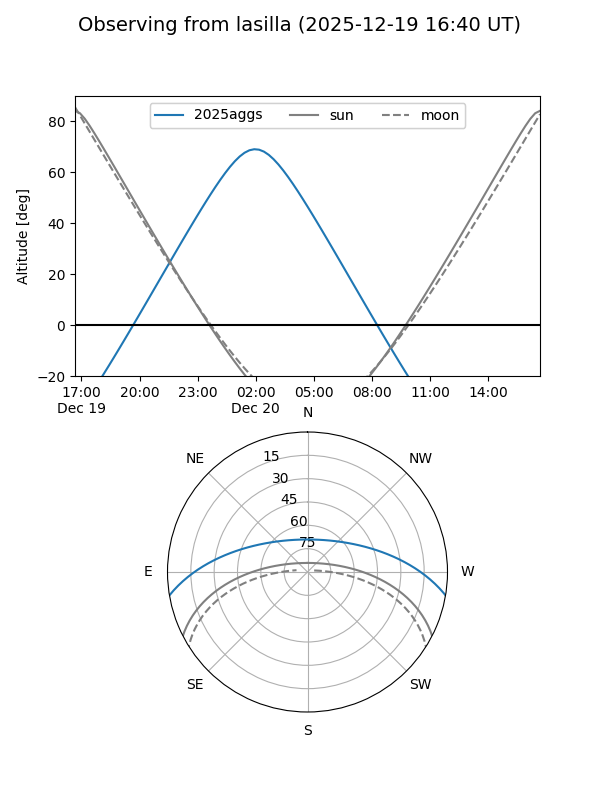
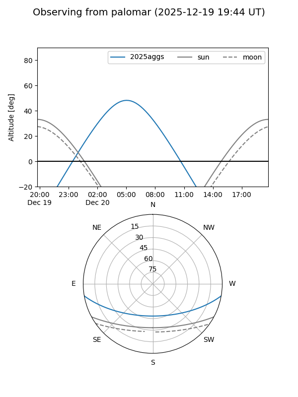
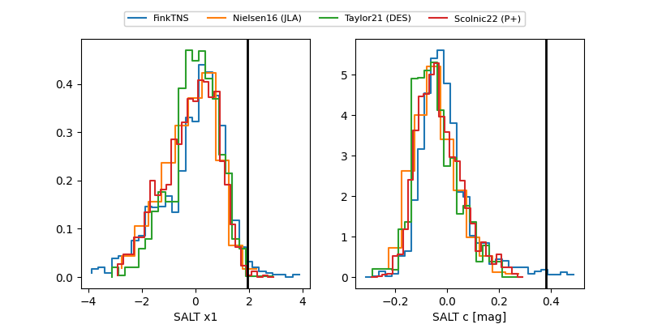

2025aggs
Target 2025aggs at 2025-12-20 05:25
Aliases and brokers:
FINK: fink-portal.org/ZTF25acgyhhn
Lasair: lasair-ztf.lsst.ac.uk/objects/ZTF25acgyhhn
ALeRCE: alerce.online/object/ZTF25acgyhhn
TNS: wis-tns.org/object/2025aggs
YSE: ziggy.ucolick.org/yse/transient_detail/2025aggs
alt names
ZTF25acgyhhn (ztf,fink_ztf)
2025aggs (tns,yse)
Coordinates:
equatorial (ra, dec) = 47.4063,-8.45638
equatorial (HMS+DMS) = 03:09:37.51,-08:27:22.97
galactic (l, b) = (189.7140,-52.38560)
Flags:
Photometry:
last ztfg=19.82, ztfr=19.27
4 ztfg, 3 ztfr detections
Lightcurve

Visibility


Additional plots
